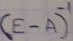

Изначально я хотел рассказать об
обнаружении
таких матриц A, которые одновременно сочетают в себе два, казалось бы, несовместимых свойства:
-
матрица E-A - "невырожденная".
Т. е., существует матрица
.
Т. е. такая матрица, что
-
существует ненулевой вектор такой, что
Естественно, речь идёт не о конечных матрицах, для которых такое
невозможно.
Речь идёт о бесконечных матрицах, но здесь не обошлось без отстутствия ассоциативности,
о чём
говорят следующие выкладки:
-
С одной стороны, согласно формуле (1) имеет место равенство:
-
с другой стороны, согласно формуле (2), если бы имела место ассоциативность, то выполнялось бы несовместимое с предыдущим равенство:
Самый простейший такой пример представлен здесь.
*Следует отметить, что и равенство
, как оказалось, в наших примерах имеет место